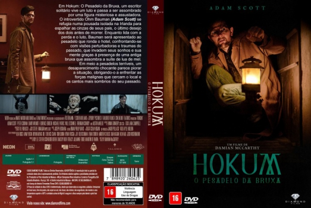

![link to Hokum: O Pesadelo da Bruxa [Autorado] on Rotten Tomatoes](../img/tomatoes.png)
![link to Hokum: O Pesadelo da Bruxa [Autorado] on TheMovieDb](../img/themoviedb.png)

Outro Título:Hokum
País:United States, 107 minutos
Idiomas falados:Inglês, Português
Gênero(s):Terror
Diretor(s):Damian McCarthy
Escritor(es):Damian McCarthy
Codec:MPEG-2 (DVD)
Número: 5943


Certificado:16
Sinopse:
O escritor solitário Ohm Bauman refugia-se em um hotel isolado para cumprir o último desejo de seus pais. A despedida silenciosa transforma-se em pesadelo quando histórias sobre uma antiga bruxa que assombra a suíte de lua de mel passam a invadir seus sonhos e sua mente. Entre visões perturbadoras e um desaparecimento chocante, Ohm é levado a um confronto aterrorizante com as forças que cercam o local e com os cantos mais sombrios de seu próprio passado.
Elenco:

Tipo de mídia: DVD5,
Legendas: Português, Sem Legendas
Alugado: Não
Tela: Anamorphic Widescreen